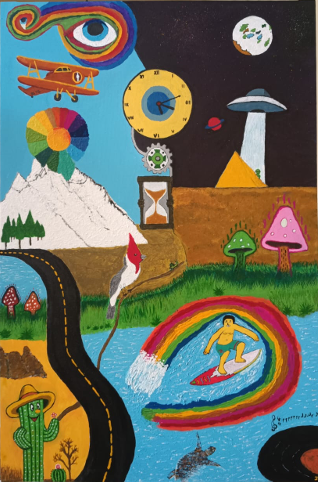

Acrílica sobre tela • 40x60cm
Obra central da série, estabelece o sistema simbólico completo. [cite: 33]
Investigando temas como tempo, percepção e sistemas de troca através de universos visuais onde o real e o imaginário coexistem. [cite: 7]

Acrílica sobre tela • 40x60cm
Obra central da série, estabelece o sistema simbólico completo. [cite: 33]

Acrílica sobre tela • 30x40cm
A origem do sistema produtivo e a relação direta com a natureza. [cite: 39]

Técnica Mista • 50x70cm
Apresentando Jack, Suri, Rubens e Martin em um momento de pausa. [cite: 58, 60, 61]